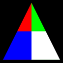
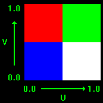
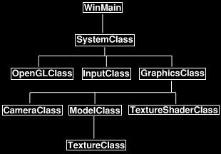

This tutorial will explain how to use texturing in OpenGL 4.0.
Texturing allows us to add photorealism to our scenes by applying photographs and other images onto polygon faces.
For example in this tutorial we will take the following image:
And then apply it to the polygon from the previous tutorial to produce the following:

The format of the textures we will be using are .tga files.
This is a 32 bit format called targa that supports an alpha channel and can be created using most image editing applications.
And before we get into the code we should discuss how texture mapping works.
To map pixels from the .tga image onto the polygon we use what is called the Texel Coordinate System.
This system converts the integer value of the pixel into a floating point value between 0.0f and 1.0f.
For example if a texture width is 256 pixels wide then the first pixel will map to 0.0f, the 256th pixel will map to 1.0f, and a middle pixel of 128 would map to 0.5f.
In the texel coordinate system the width value is named "U" and the height value is named "V".
The width goes from 0.0 on the left to 1.0 on the right.
The height goes from 0.0 on the bottom to 1.0 on the top.
For example bottom left would be denoted as U 0.0, V 0.0 and top right would be denoted as U 1.0, V 1.0.
I have made a diagram below to illustrate this system:

Now that we have a basic understanding of how to map textures onto polygons we can look at the updated frame work for this tutorial:
Frame Work

The changes to the frame work since the previous tutorial is the new TextureClass which is inside ModelClass as well as the new TextureShaderClass which replaces the ColorShaderClass.
We'll start the code section by looking at the new TextureClass first.
Textureclass.h
The TextureClass encapsulates the loading, unloading, and accessing of a single texture resource.
For each texture needed an object of this class must be instantiated.
////////////////////////////////////////////////////////////////////////////////
// Filename: textureclass.h
////////////////////////////////////////////////////////////////////////////////
#ifndef _TEXTURECLASS_H_
#define _TEXTURECLASS_H_
//////////////
// INCLUDES //
//////////////
#include <stdio.h>
///////////////////////
// MY CLASS INCLUDES //
///////////////////////
#include "openglclass.h"
////////////////////////////////////////////////////////////////////////////////
// Class name: TextureClass
////////////////////////////////////////////////////////////////////////////////
class TextureClass
{
private:
The image format we use is called Targa and has a unique header that we require this structure for.
struct TargaHeader
{
unsigned char data1[12];
unsigned short width;
unsigned short height;
unsigned char bpp;
unsigned char data2;
};
public:
TextureClass();
TextureClass(const TextureClass&);
~TextureClass();
The first two functions will load a texture from a given file name and unload that texture when it is no longer needed.
bool Initialize(OpenGLClass*, char*, unsigned int, bool);
void Shutdown();
private:
The LoadTarga functions loads a targa image into an OpenGL texture.
If you were to use other formats such as .bmp, .dds, and so forth you would place the loading function here.
bool LoadTarga(OpenGLClass*, char*, unsigned int, bool);
private:
The loaded boolean indicates if a texture has been loaded into this class object or not.
The m_textureID is the ID number of the texture as OpenGL sees it.
bool loaded;
unsigned int m_textureID;
};
#endif
Textureclass.cpp
////////////////////////////////////////////////////////////////////////////////
// Filename: textureclass.cpp
////////////////////////////////////////////////////////////////////////////////
#include "textureclass.h"
The class constructor will initialize the loaded boolean to false so that we know there has not been a texture loaded yet.
TextureClass::TextureClass()
{
loaded = false;
}
TextureClass::TextureClass(const TextureClass& other)
{
}
TextureClass::~TextureClass()
{
}
Initialize takes in the OpenGL pointer, the file name of the texture, the texture unit to load the texture into, and a boolean value indicating if the texture should wrap or clamp the colors at the edges.
It then loads the targa file into the OpenGL texture unit specified by calling the LoadTarga function.
The texture can now be used to render with.
bool TextureClass::Initialize(OpenGLClass* OpenGL, char* filename, unsigned int textureUnit, bool wrap)
{
bool result;
// Load the targa file.
result = LoadTarga(OpenGL, filename, textureUnit, wrap);
if(!result)
{
return false;
}
return true;
}
The Shutdown function releases the texture resource if it has been loaded.
void TextureClass::Shutdown()
{
// If the texture was loaded then make sure to release it on shutdown.
if(loaded)
{
glDeleteTextures(1, &m_textureID);
loaded = false;
}
return;
}
LoadTarga loads a .tga image onto an OpenGL texture.
It also sets up texture filtering, texture wrapping, and mipmaps for the texture.
bool TextureClass::LoadTarga(OpenGLClass* OpenGL, char* filename, unsigned int textureUnit, bool wrap)
{
int error, width, height, bpp, imageSize;
FILE* filePtr;
unsigned int count;
TargaHeader targaFileHeader;
unsigned char* targaImage;
The beginning section loads the .tga file into a buffer called targaImage.
// Open the targa file for reading in binary.
error = fopen_s(&filePtr, filename, "rb");
if(error != 0)
{
return false;
}
// Read in the file header.
count = fread(&targaFileHeader, sizeof(TargaHeader), 1, filePtr);
if(count != 1)
{
return false;
}
// Get the important information from the header.
width = (int)targaFileHeader.width;
height = (int)targaFileHeader.height;
bpp = (int)targaFileHeader.bpp;
// Check that it is 32 bit and not 24 bit.
if(bpp != 32)
{
return false;
}
// Calculate the size of the 32 bit image data.
imageSize = width * height * 4;
// Allocate memory for the targa image data.
targaImage = new unsigned char[imageSize];
if(!targaImage)
{
return false;
}
// Read in the targa image data.
count = fread(targaImage, 1, imageSize, filePtr);
if(count != imageSize)
{
return false;
}
// Close the file.
error = fclose(filePtr);
if(error != 0)
{
return false;
}
Now that the buffer contains the .tga data we create an OpenGL texture object and copy the buffer into that texture object.
Note that .tga have the RGB reversed so in glTextImage2D we need to set the input format as GL_BGRA so it will reverse the red and blue component for us when loading it in.
// Set the unique texture unit in which to store the data.
OpenGL->glActiveTexture(GL_TEXTURE0 + textureUnit);
// Generate an ID for the texture.
glGenTextures(1, &m_textureID);
// Bind the texture as a 2D texture.
glBindTexture(GL_TEXTURE_2D, m_textureID);
// Load the image data into the texture unit.
glTexImage2D(GL_TEXTURE_2D, 0, GL_RGBA, width, height, 0, GL_BGRA, GL_UNSIGNED_BYTE, targaImage);
Once the texture has been loaded we can set the wrap, filtering, and generate mipmaps for it.
// Set the texture color to either wrap around or clamp to the edge.
if(wrap)
{
glTexParameteri(GL_TEXTURE_2D, GL_TEXTURE_WRAP_S, GL_REPEAT);
glTexParameteri(GL_TEXTURE_2D, GL_TEXTURE_WRAP_T, GL_REPEAT);
}
else
{
glTexParameteri(GL_TEXTURE_2D, GL_TEXTURE_WRAP_S, GL_CLAMP);
glTexParameteri(GL_TEXTURE_2D, GL_TEXTURE_WRAP_T, GL_CLAMP);
}
// Set the texture filtering.
glTexParameteri(GL_TEXTURE_2D, GL_TEXTURE_MAG_FILTER, GL_LINEAR);
glTexParameteri(GL_TEXTURE_2D, GL_TEXTURE_MIN_FILTER, GL_LINEAR_MIPMAP_LINEAR);
// Generate mipmaps for the texture.
OpenGL->glGenerateMipmap(GL_TEXTURE_2D);
// Release the targa image data.
delete [] targaImage;
targaImage = 0;
// Set that the texture is loaded.
loaded = true;
return true;
}
Texture.vs
The new GLSL texture vertex shader is very similar to the color vertex shader that we covered in the previous tutorial.
However instead of a color input and color output we now have a texture coordinate input and a texture coordinate output.
Also note that the texture coordinates use the vec2 type since it only contains two floats for the U and V coordinates
whereas the color input and output had three floats for R, G, and B.
And just like the color in the previous tutorial we also pass the texture coordinates straight through to the pixel shader.
Otherwise the vertex shader remains the same as the previous tutorial.
////////////////////////////////////////////////////////////////////////////////
// Filename: texture.vs
////////////////////////////////////////////////////////////////////////////////
#version 400
/////////////////////
// INPUT VARIABLES //
/////////////////////
in vec3 inputPosition;
in vec2 inputTexCoord;
//////////////////////
// OUTPUT VARIABLES //
//////////////////////
out vec2 texCoord;
///////////////////////
// UNIFORM VARIABLES //
///////////////////////
uniform mat4 worldMatrix;
uniform mat4 viewMatrix;
uniform mat4 projectionMatrix;
////////////////////////////////////////////////////////////////////////////////
// Vertex Shader
////////////////////////////////////////////////////////////////////////////////
void main(void)
{
// Calculate the position of the vertex against the world, view, and projection matrices.
gl_Position = worldMatrix * vec4(inputPosition, 1.0f);
gl_Position = viewMatrix * gl_Position;
gl_Position = projectionMatrix * gl_Position;
// Store the texture coordinates for the pixel shader.
texCoord = inputTexCoord;
}
Texture.ps
The pixel shader has a new uniform variable called shaderTexture.
This is a texture sampler that allows us to access the targa image that was loaded into the OpenGL texture.
To access it the pixel shader uses a new function called "texture" which samples the pixel from the shaderTexture using the input texture coordinates from the vertex shader.
Note that OpenGL takes care of interpolating the texture coordinates to match up with the current pixel that we are drawing on the screen.
Once the pixel is sampled from the texture using the texture coordinates it is then returned as the final output pixel color.
////////////////////////////////////////////////////////////////////////////////
// Filename: texture.ps
////////////////////////////////////////////////////////////////////////////////
#version 400
/////////////////////
// INPUT VARIABLES //
/////////////////////
in vec2 texCoord;
//////////////////////
// OUTPUT VARIABLES //
//////////////////////
out vec4 outputColor;
///////////////////////
// UNIFORM VARIABLES //
///////////////////////
uniform sampler2D shaderTexture;
////////////////////////////////////////////////////////////////////////////////
// Pixel Shader
////////////////////////////////////////////////////////////////////////////////
void main(void)
{
vec4 textureColor;
// Sample the pixel color from the texture using the sampler at this texture coordinate location.
textureColor = texture(shaderTexture, texCoord);
outputColor = textureColor;
}
Textureshaderclass.h
The TextureShaderClass is just an updated version of the ColorShaderClass from the previous tutorial modified to handle texture coordinates instead of color components.
////////////////////////////////////////////////////////////////////////////////
// Filename: textureshaderclass.h
////////////////////////////////////////////////////////////////////////////////
#ifndef _TEXTURESHADERCLASS_H_
#define _TEXTURESHADERCLASS_H_
//////////////
// INCLUDES //
//////////////
#include <fstream>
using namespace std;
///////////////////////
// MY CLASS INCLUDES //
///////////////////////
#include "openglclass.h"
////////////////////////////////////////////////////////////////////////////////
// Class name: TextureShaderClass
////////////////////////////////////////////////////////////////////////////////
class TextureShaderClass
{
public:
TextureShaderClass();
TextureShaderClass(const TextureShaderClass&);
~TextureShaderClass();
bool Initialize(OpenGLClass*, HWND);
void Shutdown(OpenGLClass*);
void SetShader(OpenGLClass*);
bool SetShaderParameters(OpenGLClass*, float*, float*, float*, int);
private:
bool InitializeShader(char*, char*, OpenGLClass*, HWND);
char* LoadShaderSourceFile(char*);
void OutputShaderErrorMessage(OpenGLClass*, HWND, unsigned int, char*);
void OutputLinkerErrorMessage(OpenGLClass*, HWND, unsigned int);
void ShutdownShader(OpenGLClass*);
private:
unsigned int m_vertexShader;
unsigned int m_fragmentShader;
unsigned int m_shaderProgram;
};
#endif
Textureshaderclass.cpp
There are just a couple changes to the source file (other than renaming it TextureShaderClass) which I will point out.
////////////////////////////////////////////////////////////////////////////////
// Filename: textureshaderclass.cpp
////////////////////////////////////////////////////////////////////////////////
#include "textureshaderclass.h"
TextureShaderClass::TextureShaderClass()
{
}
TextureShaderClass::TextureShaderClass(const TextureShaderClass& other)
{
}
TextureShaderClass::~TextureShaderClass()
{
}
bool TextureShaderClass::Initialize(OpenGLClass* OpenGL, HWND hwnd)
{
bool result;
The new texture.vs and texture.ps GLSL files are loaded for this shader.
// Initialize the vertex and pixel shaders.
result = InitializeShader("../Engine/texture.vs", "../Engine/texture.ps", OpenGL, hwnd);
if(!result)
{
return false;
}
return true;
}
void TextureShaderClass::Shutdown(OpenGLClass* OpenGL)
{
// Shutdown the vertex and pixel shaders as well as the related objects.
ShutdownShader(OpenGL);
return;
}
void TextureShaderClass::SetShader(OpenGLClass* OpenGL)
{
// Install the shader program as part of the current rendering state.
OpenGL->glUseProgram(m_shaderProgram);
return;
}
bool TextureShaderClass::InitializeShader(char* vsFilename, char* fsFilename, OpenGLClass* OpenGL, HWND hwnd)
{
const char* vertexShaderBuffer;
const char* fragmentShaderBuffer;
int status;
// Load the vertex shader source file into a text buffer.
vertexShaderBuffer = LoadShaderSourceFile(vsFilename);
if(!vertexShaderBuffer)
{
return false;
}
// Load the fragment shader source file into a text buffer.
fragmentShaderBuffer = LoadShaderSourceFile(fsFilename);
if(!fragmentShaderBuffer)
{
return false;
}
// Create a vertex and fragment shader object.
m_vertexShader = OpenGL->glCreateShader(GL_VERTEX_SHADER);
m_fragmentShader = OpenGL->glCreateShader(GL_FRAGMENT_SHADER);
// Copy the shader source code strings into the vertex and fragment shader objects.
OpenGL->glShaderSource(m_vertexShader, 1, &vertexShaderBuffer, NULL);
OpenGL->glShaderSource(m_fragmentShader, 1, &fragmentShaderBuffer, NULL);
// Release the vertex and fragment shader buffers.
delete [] vertexShaderBuffer;
vertexShaderBuffer = 0;
delete [] fragmentShaderBuffer;
fragmentShaderBuffer = 0;
// Compile the shaders.
OpenGL->glCompileShader(m_vertexShader);
OpenGL->glCompileShader(m_fragmentShader);
// Check to see if the vertex shader compiled successfully.
OpenGL->glGetShaderiv(m_vertexShader, GL_COMPILE_STATUS, &status);
if(status != 1)
{
// If it did not compile then write the syntax error message out to a text file for review.
OutputShaderErrorMessage(OpenGL, hwnd, m_vertexShader, vsFilename);
return false;
}
// Check to see if the fragment shader compiled successfully.
OpenGL->glGetShaderiv(m_fragmentShader, GL_COMPILE_STATUS, &status);
if(status != 1)
{
// If it did not compile then write the syntax error message out to a text file for review.
OutputShaderErrorMessage(OpenGL, hwnd, m_fragmentShader, fsFilename);
return false;
}
// Create a shader program object.
m_shaderProgram = OpenGL->glCreateProgram();
// Attach the vertex and fragment shader to the program object.
OpenGL->glAttachShader(m_shaderProgram, m_vertexShader);
OpenGL->glAttachShader(m_shaderProgram, m_fragmentShader);
The second shader input variable has been changed to match the input in the vertex shader for inputTexCoord.
// Bind the shader input variables.
OpenGL->glBindAttribLocation(m_shaderProgram, 0, "inputPosition");
OpenGL->glBindAttribLocation(m_shaderProgram, 1, "inputTexCoord");
// Link the shader program.
OpenGL->glLinkProgram(m_shaderProgram);
// Check the status of the link.
OpenGL->glGetProgramiv(m_shaderProgram, GL_LINK_STATUS, &status);
if(status != 1)
{
// If it did not link then write the syntax error message out to a text file for review.
OutputLinkerErrorMessage(OpenGL, hwnd, m_shaderProgram);
return false;
}
return true;
}
char* TextureShaderClass::LoadShaderSourceFile(char* filename)
{
ifstream fin;
int fileSize;
char input;
char* buffer;
// Open the shader source file.
fin.open(filename);
// If it could not open the file then exit.
if(fin.fail())
{
return 0;
}
// Initialize the size of the file.
fileSize = 0;
// Read the first element of the file.
fin.get(input);
// Count the number of elements in the text file.
while(!fin.eof())
{
fileSize++;
fin.get(input);
}
// Close the file for now.
fin.close();
// Initialize the buffer to read the shader source file into.
buffer = new char[fileSize+1];
if(!buffer)
{
return 0;
}
// Open the shader source file again.
fin.open(filename);
// Read the shader text file into the buffer as a block.
fin.read(buffer, fileSize);
// Close the file.
fin.close();
// Null terminate the buffer.
buffer[fileSize] = '\0';
return buffer;
}
void TextureShaderClass::OutputShaderErrorMessage(OpenGLClass* OpenGL, HWND hwnd, unsigned int shaderId, char* shaderFilename)
{
int logSize, i;
char* infoLog;
ofstream fout;
wchar_t newString[128];
unsigned int error, convertedChars;
// Get the size of the string containing the information log for the failed shader compilation message.
OpenGL->glGetShaderiv(shaderId, GL_INFO_LOG_LENGTH, &logSize);
// Increment the size by one to handle also the null terminator.
logSize++;
// Create a char buffer to hold the info log.
infoLog = new char[logSize];
if(!infoLog)
{
return;
}
// Now retrieve the info log.
OpenGL->glGetShaderInfoLog(shaderId, logSize, NULL, infoLog);
// Open a file to write the error message to.
fout.open("shader-error.txt");
// Write out the error message.
for(i=0; i<logSize; i++)
{
fout << infoLog[i];
}
// Close the file.
fout.close();
// Convert the shader filename to a wide character string.
error = mbstowcs_s(&convertedChars, newString, 128, shaderFilename, 128);
if(error != 0)
{
return;
}
// Pop a message up on the screen to notify the user to check the text file for compile errors.
MessageBox(hwnd, L"Error compiling shader. Check shader-error.txt for message.", newString, MB_OK);
return;
}
void TextureShaderClass::OutputLinkerErrorMessage(OpenGLClass* OpenGL, HWND hwnd, unsigned int programId)
{
int logSize, i;
char* infoLog;
ofstream fout;
// Get the size of the string containing the information log for the failed shader compilation message.
OpenGL->glGetProgramiv(programId, GL_INFO_LOG_LENGTH, &logSize);
// Increment the size by one to handle also the null terminator.
logSize++;
// Create a char buffer to hold the info log.
infoLog = new char[logSize];
if(!infoLog)
{
return;
}
// Now retrieve the info log.
OpenGL->glGetProgramInfoLog(programId, logSize, NULL, infoLog);
// Open a file to write the error message to.
fout.open("linker-error.txt");
// Write out the error message.
for(i=0; i<logSize; i++)
{
fout << infoLog[i];
}
// Close the file.
fout.close();
// Pop a message up on the screen to notify the user to check the text file for linker errors.
MessageBox(hwnd, L"Error compiling linker. Check linker-error.txt for message.", L"Linker Error", MB_OK);
return;
}
void TextureShaderClass::ShutdownShader(OpenGLClass* OpenGL)
{
// Detach the vertex and fragment shaders from the program.
OpenGL->glDetachShader(m_shaderProgram, m_vertexShader);
OpenGL->glDetachShader(m_shaderProgram, m_fragmentShader);
// Delete the vertex and fragment shaders.
OpenGL->glDeleteShader(m_vertexShader);
OpenGL->glDeleteShader(m_fragmentShader);
// Delete the shader program.
OpenGL->glDeleteProgram(m_shaderProgram);
return;
}
The SetShaderParameters function now takes an extra input value called textureUnit.
This allows us to specify which texture unit to bind so that OpenGL knows which texture to sample in the pixel shader.
bool TextureShaderClass::SetShaderParameters(OpenGLClass* OpenGL, float* worldMatrix, float* viewMatrix, float* projectionMatrix, int textureUnit)
{
unsigned int location;
// Set the world matrix in the vertex shader.
location = OpenGL->glGetUniformLocation(m_shaderProgram, "worldMatrix");
if(location == -1)
{
return false;
}
OpenGL->glUniformMatrix4fv(location, 1, false, worldMatrix);
// Set the view matrix in the vertex shader.
location = OpenGL->glGetUniformLocation(m_shaderProgram, "viewMatrix");
if(location == -1)
{
return false;
}
OpenGL->glUniformMatrix4fv(location, 1, false, viewMatrix);
// Set the projection matrix in the vertex shader.
location = OpenGL->glGetUniformLocation(m_shaderProgram, "projectionMatrix");
if(location == -1)
{
return false;
}
OpenGL->glUniformMatrix4fv(location, 1, false, projectionMatrix);
The location in the pixel shader for the shaderTexture variable is obtained here and then the texture unit is set.
The texture can now be sampled in the pixel shader.
// Set the texture in the pixel shader to use the data from the first texture unit.
location = OpenGL->glGetUniformLocation(m_shaderProgram, "shaderTexture");
if(location == -1)
{
return false;
}
OpenGL->glUniform1i(location, textureUnit);
return true;
}
Modelclass.h
The ModelClass has changed since the previous tutorial so that it can now accommodate texturing.
////////////////////////////////////////////////////////////////////////////////
// Filename: modelclass.h
////////////////////////////////////////////////////////////////////////////////
#ifndef _MODELCLASS_H_
#define _MODELCLASS_H_
The TextureClass header is now included in the ModelClass header.
///////////////////////
// MY CLASS INCLUDES //
///////////////////////
#include "textureclass.h"
////////////////////////////////////////////////////////////////////////////////
// Class name: ModelClass
////////////////////////////////////////////////////////////////////////////////
class ModelClass
{
private:
The VertexType has replaced the color component with texture coordinates.
struct VertexType
{
float x, y, z;
float tu, tv;
};
public:
ModelClass();
ModelClass(const ModelClass&);
~ModelClass();
The Initialize function now takes new inputs related to the texture.
bool Initialize(OpenGLClass*, char*, unsigned int, bool);
void Shutdown(OpenGLClass*);
void Render(OpenGLClass*);
private:
bool InitializeBuffers(OpenGLClass*);
void ShutdownBuffers(OpenGLClass*);
void RenderBuffers(OpenGLClass*);
ModelClass also now has both a private LoadTexture and ReleaseTexture for loading and releasing the texture that will be used to render this model.
bool LoadTexture(OpenGLClass*, char*, unsigned int, bool);
void ReleaseTexture();
private:
int m_vertexCount, m_indexCount;
unsigned int m_vertexArrayId, m_vertexBufferId, m_indexBufferId;
And finally the new m_Texture variable is used for loading, releasing, and accessing the texture resource for this model.
TextureClass* m_Texture;
};
#endif
Modelclass.cpp
////////////////////////////////////////////////////////////////////////////////
// Filename: modelclass.cpp
////////////////////////////////////////////////////////////////////////////////
#include "modelclass.h"
The class constructor now initializes the new texture object to null.
ModelClass::ModelClass()
{
m_Texture = 0;
}
ModelClass::ModelClass(const ModelClass& other)
{
}
ModelClass::~ModelClass()
{
}
Initialize now takes as input the file name of the .tga texture that the model will be using.
It also takes as input the texture unit in which to load the .tga file into.
And it also takes a boolean value which indicates if the color should wrap around or clamp at the edges.
bool ModelClass::Initialize(OpenGLClass* OpenGL, char* textureFilename, unsigned int textureUnit, bool wrap)
{
bool result;
// Initialize the vertex and index buffer that hold the geometry for the triangle.
result = InitializeBuffers(OpenGL);
if(!result)
{
return false;
}
The Initialize function calls a new private function that will load the .tga texture.
// Load the texture for this model.
result = LoadTexture(OpenGL, textureFilename, textureUnit, wrap);
if(!result)
{
return false;
}
return true;
}
The Shutdown function now calls the new private function to release the texture object that was loaded during initialization.
void ModelClass::Shutdown(OpenGLClass* OpenGL)
{
// Release the texture used for this model.
ReleaseTexture();
// Release the vertex and index buffers.
ShutdownBuffers(OpenGL);
return;
}
void ModelClass::Render(OpenGLClass* OpenGL)
{
// Put the vertex and index buffers on the graphics pipeline to prepare them for drawing.
RenderBuffers(OpenGL);
return;
}
bool ModelClass::InitializeBuffers(OpenGLClass* OpenGL)
{
VertexType* vertices;
unsigned int* indices;
// Set the number of vertices in the vertex array.
m_vertexCount = 3;
// Set the number of indices in the index array.
m_indexCount = 3;
// Create the vertex array.
vertices = new VertexType[m_vertexCount];
if(!vertices)
{
return false;
}
// Create the index array.
indices = new unsigned int[m_indexCount];
if(!indices)
{
return false;
}
The vertex array now has a texture coordinate component instead of a color component.
The texture vector is always U first and V second.
For example the first texture coordinate is bottom left of the triangle which corresponds to U 0.0, V 0.0.
Use the diagram at the top of this page to figure out what your coordinates need to be.
Note that you can change the coordinates to map any part of the texture to any part of the polygon face.
In this tutorial I'm just doing a direct mapping for simplicity reasons.
// Load the vertex array with data.
// Bottom left.
vertices[0].x = -1.0f; // Position.
vertices[0].y = -1.0f;
vertices[0].z = 0.0f;
vertices[0].tu = 0.0f; // Texture coordinates.
vertices[0].tv = 0.0f;
// Top middle.
vertices[1].x = 0.0f; // Position.
vertices[1].y = 1.0f;
vertices[1].z = 0.0f;
vertices[1].tu = 0.5f; // Texture coordinates.
vertices[1].tv = 1.0f;
// Bottom right.
vertices[2].x = 1.0f; // Position.
vertices[2].y = -1.0f;
vertices[2].z = 0.0f;
vertices[2].tu = 1.0f; // Texture coordinates.
vertices[2].tv = 0.0f;
// Load the index array with data.
indices[0] = 0; // Bottom left.
indices[1] = 1; // Top middle.
indices[2] = 2; // Bottom right.
// Allocate an OpenGL vertex array object.
OpenGL->glGenVertexArrays(1, &m_vertexArrayId);
// Bind the vertex array object to store all the buffers and vertex attributes we create here.
OpenGL->glBindVertexArray(m_vertexArrayId);
// Generate an ID for the vertex buffer.
OpenGL->glGenBuffers(1, &m_vertexBufferId);
// Bind the vertex buffer and load the vertex (position and texture) data into the vertex buffer.
OpenGL->glBindBuffer(GL_ARRAY_BUFFER, m_vertexBufferId);
OpenGL->glBufferData(GL_ARRAY_BUFFER, m_vertexCount * sizeof(VertexType), vertices, GL_STATIC_DRAW);
Although enabling the second vertex attribute hasn't changed, it now means something different since it is now texture coordinates and no longer color components.
// Enable the two vertex array attributes.
OpenGL->glEnableVertexAttribArray(0); // Vertex position.
OpenGL->glEnableVertexAttribArray(1); // Texture coordinates.
// Specify the location and format of the position portion of the vertex buffer.
OpenGL->glBindBuffer(GL_ARRAY_BUFFER, m_vertexBufferId);
OpenGL->glVertexAttribPointer(0, 3, GL_FLOAT, false, sizeof(VertexType), 0);
When we specify the layout of the texture coordinate portion of the vertex buffer we need to change the second argument to 2 since there are only two floats now instead of three.
Otherwise the rest of the inputs remain the same.
// Specify the location and format of the texture coordinate portion of the vertex buffer.
OpenGL->glBindBuffer(GL_ARRAY_BUFFER, m_vertexBufferId);
OpenGL->glVertexAttribPointer(1, 2, GL_FLOAT, false, sizeof(VertexType), (unsigned char*)NULL + (3 * sizeof(float)));
// Generate an ID for the index buffer.
OpenGL->glGenBuffers(1, &m_indexBufferId);
// Bind the index buffer and load the index data into it.
OpenGL->glBindBuffer(GL_ELEMENT_ARRAY_BUFFER, m_indexBufferId);
OpenGL->glBufferData(GL_ELEMENT_ARRAY_BUFFER, m_indexCount* sizeof(unsigned int), indices, GL_STATIC_DRAW);
// Now that the buffers have been loaded we can release the array data.
delete [] vertices;
vertices = 0;
delete [] indices;
indices = 0;
return true;
}
void ModelClass::ShutdownBuffers(OpenGLClass* OpenGL)
{
// Disable the two vertex array attributes.
OpenGL->glDisableVertexAttribArray(0);
OpenGL->glDisableVertexAttribArray(1);
// Release the vertex buffer.
OpenGL->glBindBuffer(GL_ARRAY_BUFFER, 0);
OpenGL->glDeleteBuffers(1, &m_vertexBufferId);
// Release the index buffer.
OpenGL->glBindBuffer(GL_ELEMENT_ARRAY_BUFFER, 0);
OpenGL->glDeleteBuffers(1, &m_indexBufferId);
// Release the vertex array object.
OpenGL->glBindVertexArray(0);
OpenGL->glDeleteVertexArrays(1, &m_vertexArrayId);
return;
}
void ModelClass::RenderBuffers(OpenGLClass* OpenGL)
{
// Bind the vertex array object that stored all the information about the vertex and index buffers.
OpenGL->glBindVertexArray(m_vertexArrayId);
// Render the vertex buffer using the index buffer.
glDrawElements(GL_TRIANGLES, m_indexCount, GL_UNSIGNED_INT, 0);
return;
}
LoadTexture is a new private function that will create the texture object and then initialize it with the input file name provided.
This function is called during initialization.
bool ModelClass::LoadTexture(OpenGLClass* OpenGL, char* textureFilename, unsigned int textureUnit, bool wrap)
{
bool result;
// Create the texture object.
m_Texture = new TextureClass;
if(!m_Texture)
{
return false;
}
// Initialize the texture object.
result = m_Texture->Initialize(OpenGL, textureFilename, textureUnit, wrap);
if(!result)
{
return false;
}
return true;
}
The ReleaseTexture function will release the texture object that was created and loaded during the LoadTexture function.
void ModelClass::ReleaseTexture()
{
// Release the texture object.
if(m_Texture)
{
m_Texture->Shutdown();
delete m_Texture;
m_Texture = 0;
}
return;
}
Graphicsclass.h
////////////////////////////////////////////////////////////////////////////////
// Filename: graphicsclass.h
////////////////////////////////////////////////////////////////////////////////
#ifndef _GRAPHICSCLASS_H_
#define _GRAPHICSCLASS_H_
///////////////////////
// MY CLASS INCLUDES //
///////////////////////
#include "openglclass.h"
#include "cameraclass.h"
#include "modelclass.h"
The GraphicsClass now includes the new TextureShaderClass header and the ColorShaderClass header has been removed.
#include "textureshaderclass.h"
/////////////
// GLOBALS //
/////////////
const bool FULL_SCREEN = true;
const bool VSYNC_ENABLED = true;
const float SCREEN_DEPTH = 1000.0f;
const float SCREEN_NEAR = 0.1f;
////////////////////////////////////////////////////////////////////////////////
// Class name: GraphicsClass
////////////////////////////////////////////////////////////////////////////////
class GraphicsClass
{
public:
GraphicsClass();
GraphicsClass(const GraphicsClass&);
~GraphicsClass();
bool Initialize(OpenGLClass*, HWND);
void Shutdown();
bool Frame();
private:
bool Render();
private:
OpenGLClass* m_OpenGL;
CameraClass* m_Camera;
ModelClass* m_Model;
A new TextureShaderClass private object has been added.
TextureShaderClass* m_TextureShader;
};
#endif
Graphicsclass.cpp
////////////////////////////////////////////////////////////////////////////////
// Filename: graphicsclass.cpp
////////////////////////////////////////////////////////////////////////////////
#include "graphicsclass.h"
The m_TextureShader variable is set to null in the constructor.
GraphicsClass::GraphicsClass()
{
m_OpenGL = 0;
m_Camera = 0;
m_Model = 0;
m_TextureShader = 0;
}
GraphicsClass::GraphicsClass(const GraphicsClass& other)
{
}
GraphicsClass::~GraphicsClass()
{
}
bool GraphicsClass::Initialize(OpenGLClass* OpenGL, HWND hwnd)
{
bool result;
// Store a pointer to the OpenGL class object.
m_OpenGL = OpenGL;
// Create the camera object.
m_Camera = new CameraClass;
if(!m_Camera)
{
return false;
}
// Set the initial position of the camera.
m_Camera->SetPosition(0.0f, 0.0f, -10.0f);
// Create the model object.
m_Model = new ModelClass;
if(!m_Model)
{
return false;
}
The ModelClass::Initialize function now takes in the name of the texture that will be used for rendering the model as well as the texture unit and wrapping boolean.
// Initialize the model object.
result = m_Model->Initialize(m_OpenGL, "../Engine/data/test.tga", 0, true);
if(!result)
{
MessageBox(hwnd, L"Could not initialize the model object.", L"Error", MB_OK);
return false;
}
The new TextureShaderClass object is created and initialized.
// Create the texture shader object.
m_TextureShader = new TextureShaderClass;
if(!m_TextureShader)
{
return false;
}
// Initialize the texture shader object.
result = m_TextureShader->Initialize(m_OpenGL, hwnd);
if(!result)
{
MessageBox(hwnd, L"Could not initialize the texture shader object.", L"Error", MB_OK);
return false;
}
return true;
}
void GraphicsClass::Shutdown()
{
The TextureShaderClass object is also released in the Shutdown function.
// Release the texture shader object.
if(m_TextureShader)
{
m_TextureShader->Shutdown(m_OpenGL);
delete m_TextureShader;
m_TextureShader = 0;
}
// Release the model object.
if(m_Model)
{
m_Model->Shutdown(m_OpenGL);
delete m_Model;
m_Model = 0;
}
// Release the camera object.
if(m_Camera)
{
delete m_Camera;
m_Camera = 0;
}
// Release the pointer to the OpenGL class object.
m_OpenGL = 0;
return;
}
bool GraphicsClass::Frame()
{
bool result;
// Render the graphics scene.
result = Render();
if(!result)
{
return false;
}
return true;
}
bool GraphicsClass::Render()
{
float worldMatrix[16];
float viewMatrix[16];
float projectionMatrix[16];
// Clear the buffers to begin the scene.
m_OpenGL->BeginScene(0.0f, 0.0f, 0.0f, 1.0f);
// Generate the view matrix based on the camera's position.
m_Camera->Render();
// Get the world, view, and projection matrices from the opengl and camera objects.
m_OpenGL->GetWorldMatrix(worldMatrix);
m_Camera->GetViewMatrix(viewMatrix);
m_OpenGL->GetProjectionMatrix(projectionMatrix);
The texture shader is called now instead of the color shader to render the model.
Notice it also takes the texture unit as the last input parameter to the SetShaderParameters function.
Zero represents the first texture unit in OpenGL.
// Set the texture shader as the current shader program and set the matrices that it will use for rendering.
m_TextureShader->SetShader(m_OpenGL);
m_TextureShader->SetShaderParameters(m_OpenGL, worldMatrix, viewMatrix, projectionMatrix, 0);
// Render the model using the texture shader.
m_Model->Render(m_OpenGL);
// Present the rendered scene to the screen.
m_OpenGL->EndScene();
return true;
}
Summary
You should now understand the basics of loading a texture, mapping it to a polygon face, and then rendering it with a shader.
To Do Exercises
1. Re-compile the code and ensure that a texture mapped triangle does appear on your screen. Press escape to quit once done.
2. Create your own tga texture and place it in the same data directory with test.tga.
Inside the GraphicsClass::Initialize function change the model initialization to have your texture name and then re-compile and run the program.
3. Change the code to create two triangles that form a square. Map the entire texture to this square so that the entire texture shows up correctly on the screen.
4. Move the camera to different distances to see the effect of the filtering.
5. Try some of the other filters and move the camera to different distances to see the different results.
Source Code
Source Code and Data Files: gl40src05.zip
Executable: gl40exe05.zip